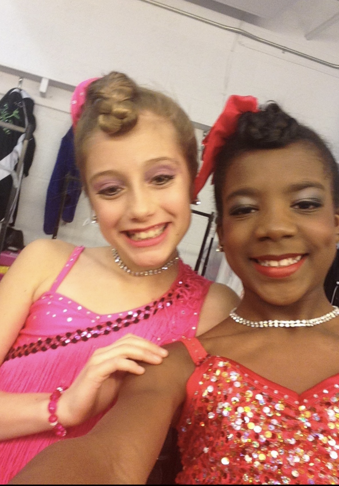
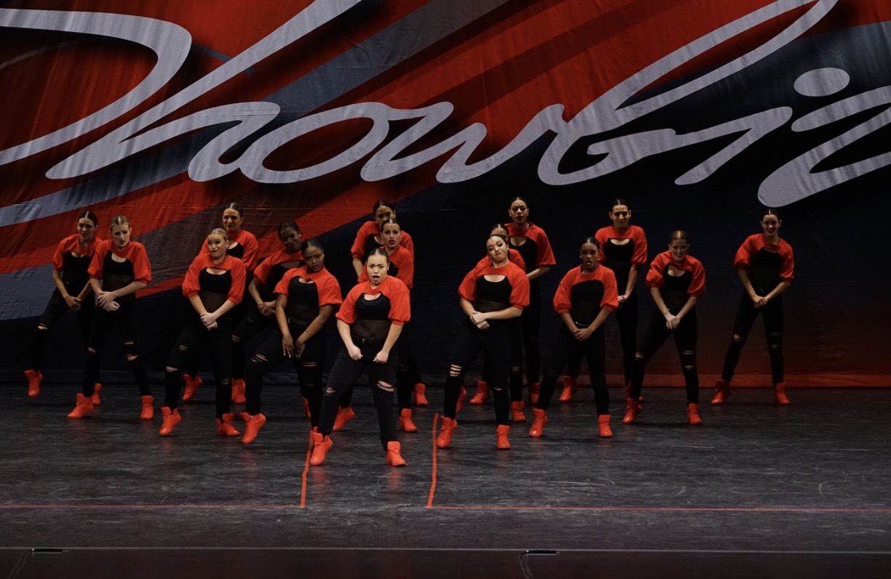
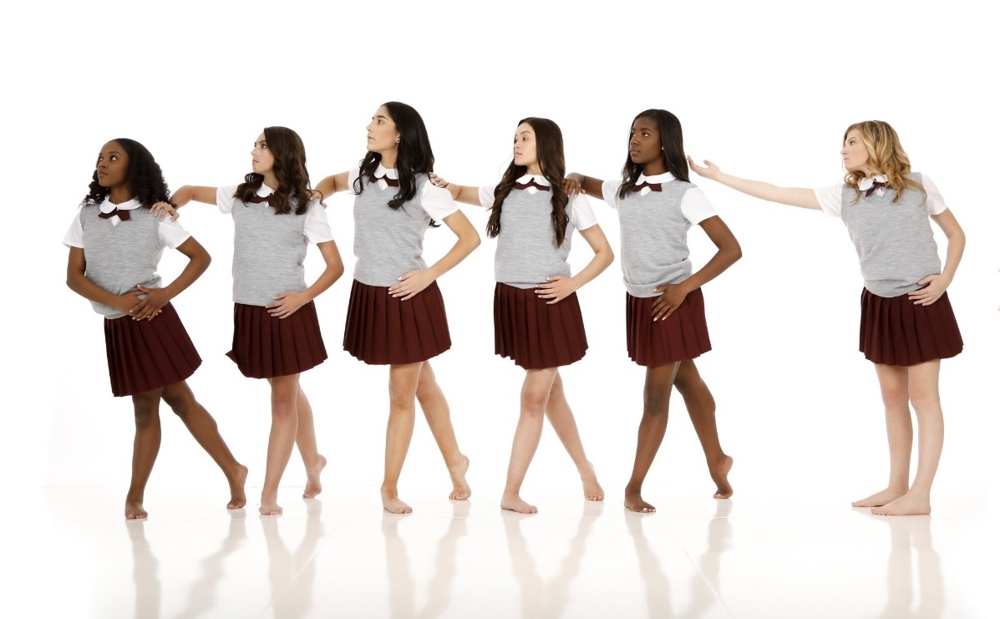
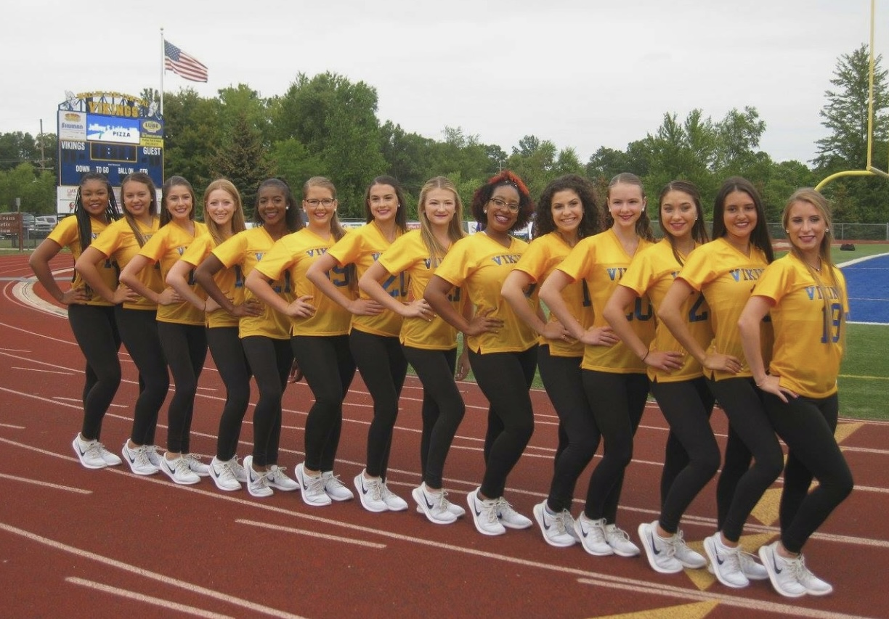
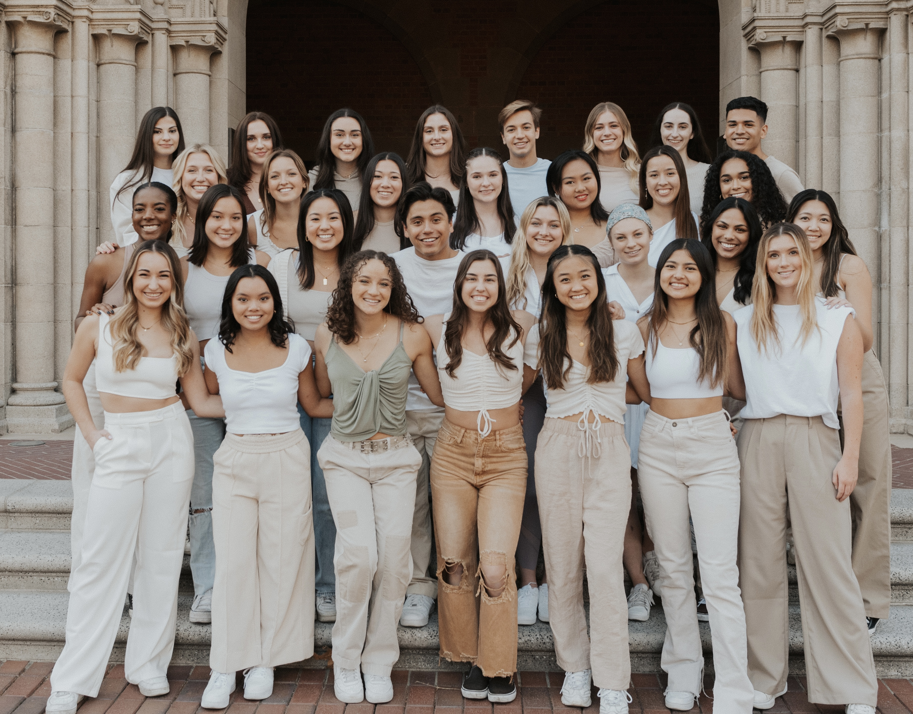
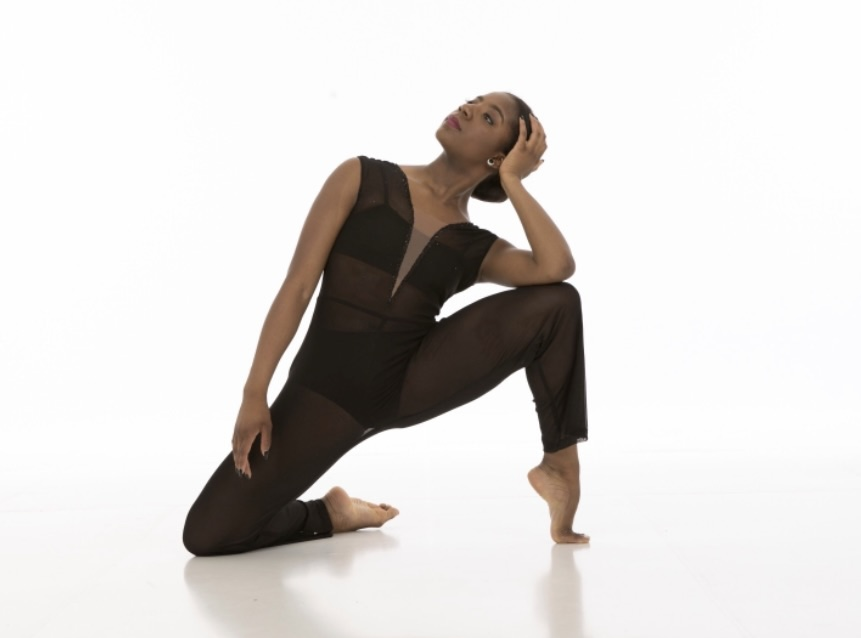
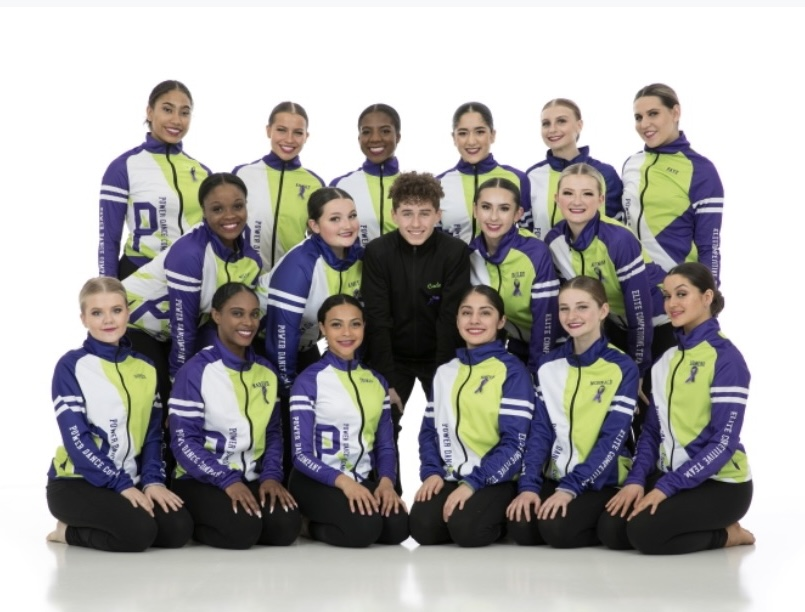

One of my greatest passions in life is dance. I began dancing when I was ten years old after my mom made me go to a dance camp while she was at work. Initially, I was not too fond of it, and I preferred gymnastics, which I was already enrolled in. After a few days of dance camp, I fell in love and formed close relationships with my future teacher. Watching the TV show, dance moms also inspired me to keep dancing and join a competition team at my studio. I danced at The Art of Dance on the competition team for four years. After that, I joined Power Dance Company to pursue a more competitive and commercial dance sphere. I competed here for three years, made so many friends, and my love for dance grew. I studied ballet, jazz, lyrical, modern, contemporary, hip-hop, and tap throughout my studio dance career. During 8th grade, I auditioned and made the Varsity Pom Pons dance team for my future high school. We performed at football games and basketball games and competed around Michigan. During the pandemic, I maintained my love for dance by taking advantage of the incredible online conventions and classes that I could find. Now, I am a part of USC Xpressions, a student-led contemporary and jazz-based dance company here on campus. I am so excited to keep dancing, especially being in LA now. Dancing is not contained to just the studio or the field for me, though. I dance wherever I am: in my dorm, at parties, and even in my head whenever I listen to music.







